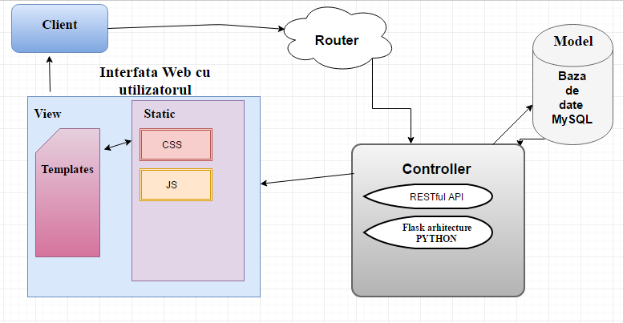
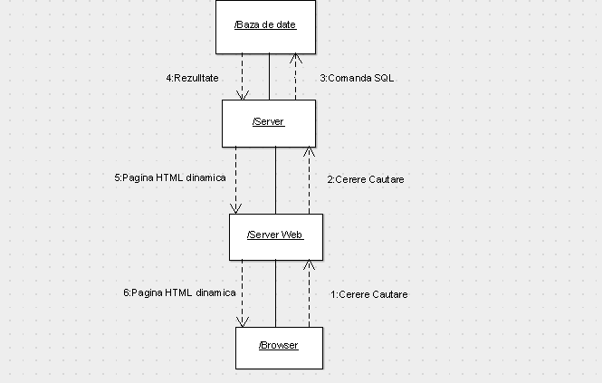
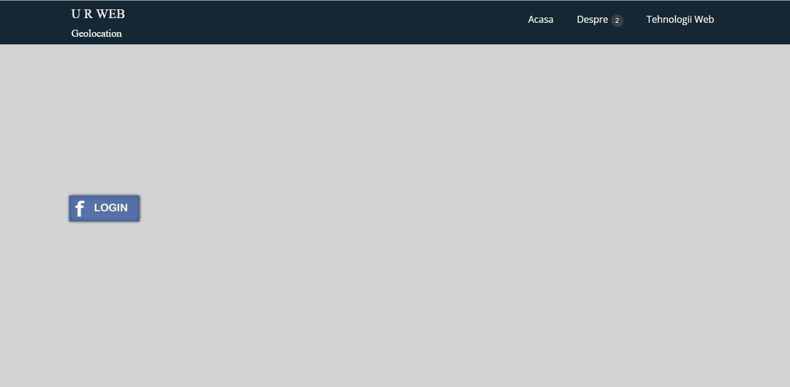
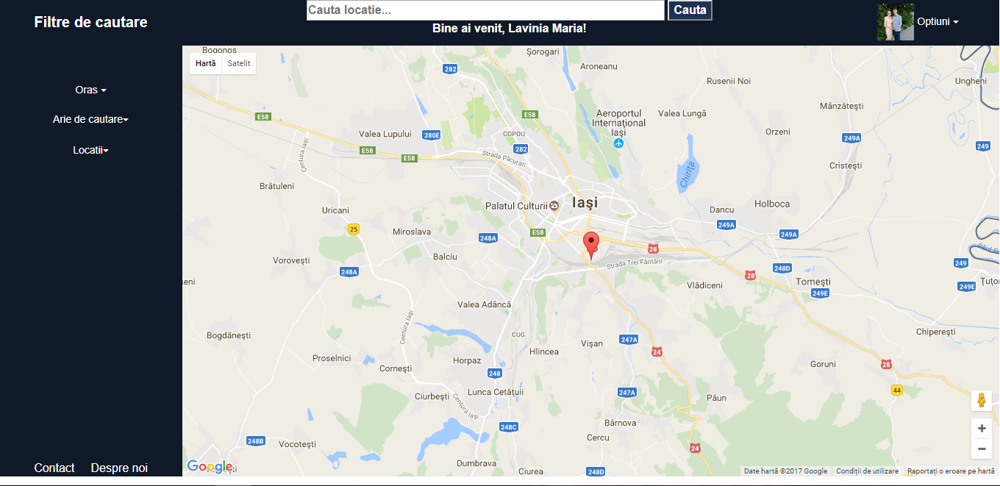
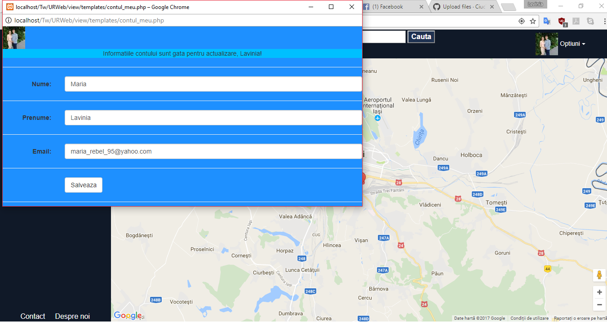
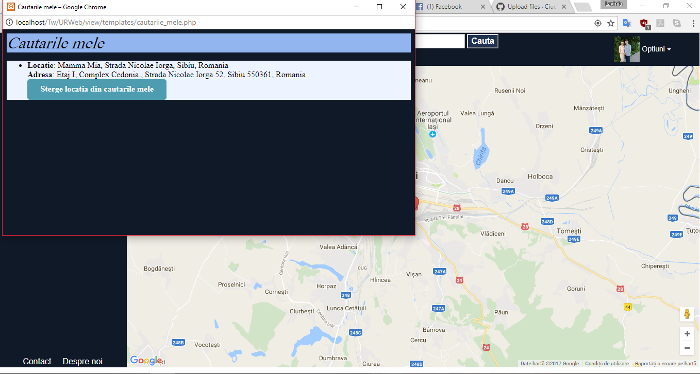
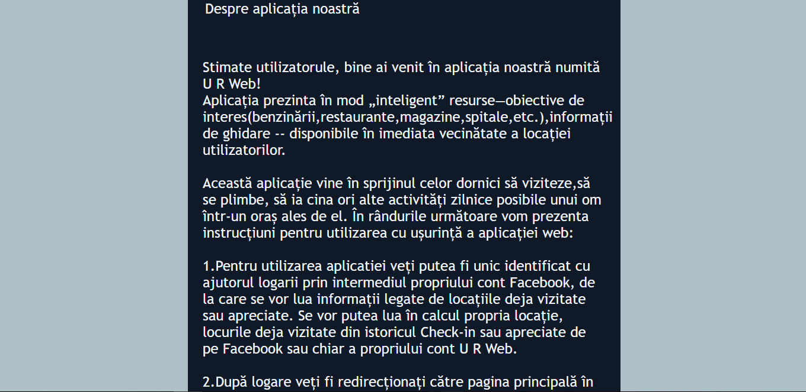

U R Web Project
Cuprins:
1) Introducere
Folosind informațiile privind hărțile oferite de Google Maps și locații predefinite(ex. spitale,centre comerciale,morgi,parcuri,locatii turistice) , se dorește implementarea unui instrument Web care să recomande unui utilizator ce dorește să viziteze,să se plimbe, să ia cina ori alte activități zilnice posibile unui om într-un oraș ales de el. Utilizatorul va putea fi unic identificat cu ajutorul logarii prin intermediul propriului cont Facebook, de la care se vor lua informații legate de locațiile deja vizitate sau apreciate. Se vor putea lua în calcul propria locație, locurile deja vizitate din istoricul Check-in sau apreciate de pe Facebook sau chiar a propriului cont U R Web. Sistemul va putea oferi informații despre locație și va putea propune rute optime către destinația deja aleasă.2) Tehnologii utilizate
Pentru implementarea proiectului vom folosi HyperText Transfer Protocol bazat pe stiva de protocoale TCP/IP , un protocol fiabil de tip cerere/raspuns ce foloseste ca port standard de acces, portul 80. Focalizat asupra performantei, HTTP/2.0 este dezvoltat din varianta 1.1 , fiind standardizat si introdus pe majoritatea browserelor in anul 2015. O altă tehnologie utilizată vor fi bazele de date MySQL . Acestea reprezină o modalitate de stocare a unor informații și date pe un suport extern ( un dispozitiv de stocare), cu posibilitatea extinderii ușoare și a regăsirii rapide a acestora. Interfata Web va consta din încarcarea în paginile HTML a elementelor de design din CSS cu ajutorul Boostrap si JQuery, susținute de arhitectura în limbajul PHP.
3) Arhitectura
Aplicația va folosi o arhitectură de tipul CLIENT/SERVER TCP concurent. Serverul va primi cererile de conectari de la clienți,după care va oferi acestora posibilitatea de a se loga prin intermediul contului de Facebook. Dacă logarea eșuează, clientului îi se va propune încercarea de reconectare către server . Clientul se poate loga ,iar daca logarea se termina cu succes se va accesa pagina home. Pe pagina Home se vor putea accesa functionalitatile aplicatiei noastre. Printre acestea se regasesc : pagina principala stanga, se face o cautare pe baza tuturor informatiilor dorite de utilizator, pagina principala dreapta , Optiuni : Contul meu(informatii despre utilizator,ex:email,nume, id), Cautarile mele (în care se vor vizualiza cautarile utilizatorului până acum avand posibilitatea de a le șterge șterse ) și Iesire pentru delogare. În partea de footer se va regăsi Contact informații suplimentare și Despre noi pentru detalii de utilizare a aplicației. In cazul accesarii in partea de cautare, se va trimite o cerere catre server ,iar pe baza informatiilor primite se va face o cautare in baza de date. Printr-un formular html se vor trimite cu ajutorul metodei POST , informatiile vor fi cautate in baza de date. Daca informatiile au fost gasite de API-ul nostru, se va afisa ruta si la o selectare a unei singure locatii se vor afisa informatii despre locatia selectata și posibile trasee până la locația respectivă . Printr-un formular html se vor trimite cu ajutorul metodei POST , informatiile vor fi cautate in baza de date. Daca informatiile au fost gasite in baza de date se va afisa lista de destinatii posibile.

4) Detalii De implementare
Dupa accesarea adresei , va aparea meniul de login . Odată ce datele au fost ăntroduse in meniul de login cu ajutorul contului de Facebook existent, se va face o interogare in baza de date daca userul există,iar dacă nu se returneaza nici un row la introducerea datelor,se va semnala o eroare . In caz contrar, userul va fi redirectionat catre pagina de meniu.
4.1 Baza de Date

Diagrama BDTabele in DB


Interfata actuala
Pagina Login
Pagina aplicatiei
Optiunea Contul meu
Optiunea Cautarile mele
Deaspre noi
5) Concluzii
Aplicatia va respecta toate cerintele mentionate la informatii. Cu toate acestea, vom putea include si cateva lucruri suplimentare. Fiecare utilizator , va avea un cont. Acest cont va retine toate calatoriile utilizatorului.